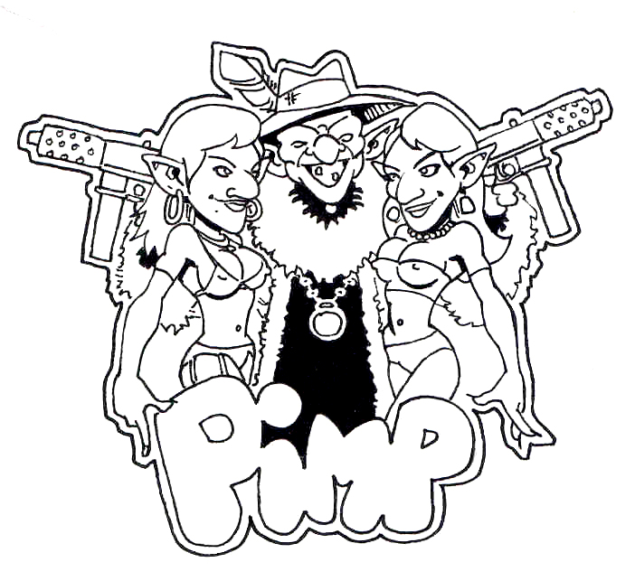
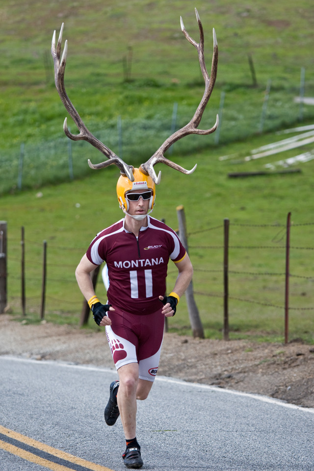
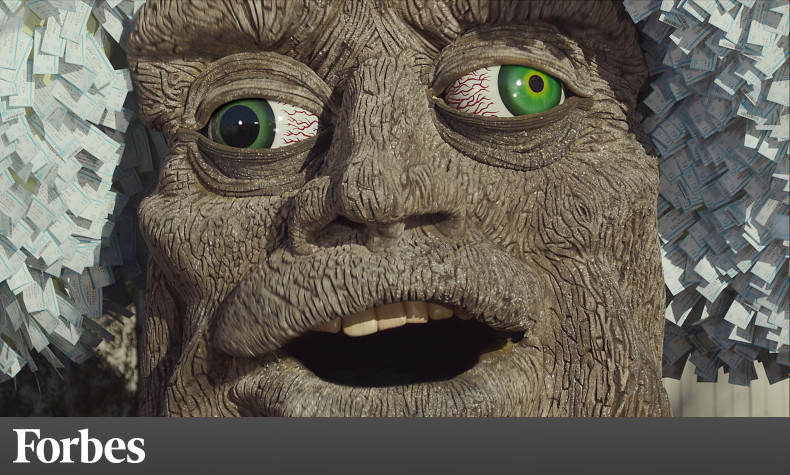

The Dream and Twilight Gate
You find that exhaustion overtakes you not soon after bedding down. Your dreams are unsettling however. The air is hot, and burning your throat. You find that you thirst uncontrollably. You desperately try and clear your eyes, but they are dry and burn like sand is in them. You continue to wake up, noticing that others in your group seem restless as well. You are all sweltering, soaked in sweat and throats parched from the dream. The cool night air draws you out. Long after midnight your party gathers in comfort. Wineskins are passed, and after a while pipes light up and deep breaths are taken – you all discover you have been having the same dream. Soon you all calm down, and begin to return to the comfort of your beds after laughing it off. Turning a corner, the stand of trees you just left are not there, and neither is your place of rest. Even the stars above seem foreign, and strange – forming a strange arch-like pattern you seem directly under.
Take an accounting of what they have. Be realistic – most PC’s don’t wander around with anything but a small, personal weapon. This will be all they have when they go through the gate, into The Feywild.
Going Through the Twilight Gate
The bushes around you fade before your very eyes. You can see eyes reflecting light at the edges of your vision, and hear something akin to the whispers and what sounds like the laughter of children. A wave of vertigo overwhelms you, the ground seems to move under you and you fall. You roll to the ready, with only your night clothes and personal small weapons. Nothing is as it was… you are no longer in where you believed you should be… but someplace else, a shadowy reflection of that world, verdant and eerie.
The Twilight Gate is a permanent sundering of The Pattern in which the “stars do not align” as they should and the normal course of reality is twisted, creating a gateway (under these misaligned stars) to a twisted place in either The Feywild or Shadowfell. The gate has been activated (by ancient eldritch incantations) by powerful Fey to send the PC’s into.
Distrust and violence are inimical to the Twilight Gate – the more weapons and armor the PC’s take through, the more Disadvantage they will have. The PC will have 1 measure of Disadvantage imposed on them (used as soon as it can be in encounters) for the following conditions.
- For each point of AC from physical armor
- For each medium weapon (sword, axe, etc.)
- For each large weapon (2 handed or a bow), the penalty is doubled
Taking Bearings
That tight, parched feeling returns once again to your throat. You stand on a road that stretches out behind you endlessly – covered in mist. Ahead, the road winds up into what is likely a pass between 2 hilly regions. The hills are covered with a lush, thick forest – which begins about 100 feet in front of you, where the road immediately winds to the left out of sight. Around you in other directions is just mist and trees – you could swear something is moving in the mist, lurking just beyond the edge of your vision.
At this point, if the PC’s try to go any direction but forward, they will have the wandering encounter “Returning to the Starting Point”. Explain that their throats tighten ruthlessly and they feel a ravenous thirst.
- DC 10 Survival for the road – into the forest one set of booted footprints – good boots (expensive)
- DC 15 Arcane to know it’s the Feywild
- DC 10 Perception to hear a stream in direction of the woods – they are thirsty after dream transport
Exploring in the Rivin Feywild
If the party moves off the Rivin Road (which leads to Rivin’s Hedge Maze), they will have a set of random encounters.
Fires: All is verdant – no dead wood to make fires (but the PC’s will never be truly cold when on the Rivin Road)
Flying: Any character thinking to somehow fly their way over the lands is in for an unending encounter of “n Angry Forest” – within 2 rounds swarms of animals will attack them unendingly until they return to the ground or into the treeline.
Fey Ancestry: Those with Fey Ancestry can spend Essence to automatically trek into the forest and mist and automatically execute a “Return to the Starting Point”.
How to Get Out of Rivin’s Feywild
The PC’s must go through the pass, to Rivin’s Hedge Maze – the maze’s power can lead the party anywhere they want to go, and they should want to return home. Any other destination can be handled by the GM.
Random Encounters in the Revin Feywild
Roll a D20
1-5) Getting Lost
6) An Angry Forest
8-12) Returning to the Starting Point
13-15) Go Forward one Encounter
16-18) Go Backward one Encounter
19) Mirendriel (the “good” witch)
20) Glurendriel (the “bad” witch)
Dying in the Rivin Feywild
As you breath your last, you expect the world to go dark and quiet, but instead you find yourself in a tunnel of wind and water. You smell earth and are blinded by a bright light. You gasp, and feel your lungs fill with wet air – like you are being born again. You scream like a newborn and sob uncontrollably, whimpering and shuddering in a ball.
[Witness]
As your companion falls, their body crumples and decomposes into the ground almost instantly. their belongings remain, stained by death, but within moments the body is nowhere to be seen.
The PC cannot return until the encounter is complete. Their sobs will lead the rest of the party to them.The character experiencing death will have vague, horrific memory of a dank hedge maze, of being pursued in the darkness by some terrible beast, and just at it was about to trample them, they woke up.
- Scar: Each death will leave a scar; 3 deaths will disfigure the character (-1 Charisma)
- Health: Each 3 deaths will permanently reduce the character’s HP by 1
- Vitality: If a character suffers 4 or more deaths, they will lose 1 point of ability randomly.
Encounters in the Rivin Feywild
Getting Lost
Each new glade and clearing looks like the last, and there’s no sign of the road. An itch begins in the back of your mind – you sense that something is following you. You sense too that it wants to kill you.
Not just you, but it wants to end your lineage, and that of everyone you know.
Make a DC 10 Sanity check, or piss yourself.
You begin to bite your nails, and scratch yourself all over. Every lie you ever told becomes something you cannot live with. You want to die.
An Angry Forest
As you push your way further beyond the road, you sense a tension all around you. The trees and shrubs begin to shake near you, and you hear the beating of wings, and a buzzing sound – you have a very, very, bad feeling about this…
A randomly determine attack will happen for 2 rounds. Trees and shrubs will become normal, and animals swarms will simply pass through – little the PC’s can do.
- Awakened Tree
- Awakened Shrub (2+D4)
- Swarm of Bats
- Swarm of Insects
- Swarm of Ravens
Returning to the Starting Point
“Starting Point” is the last completed encounter point.
You walk for several minutes, but the mist moves through, and a wind obscures the stars with branches. As you push through the undergrowth, and come out of a mist bank, you stumble back onto the road – clearly no more than several feet from where you started.
It is obvious by trampled grass and scuff marks that it’s the point at which they started. If the GM wants to make the PC’s paranoid, they can make a Survival check and see some horrific footprints of a denizen of the hells pursuing them.
Go Forward one Encounter
This moves the party past the next planned encounter, to the one after it (as allowed; the final encounter of the maze cannot be bypassed).
Go Backward one Encounter
This moves the party past the next planned encounter, to the one after it (as allowed; the furthest point back achievable this way is “Taking Bearings”).
Mirendriel (the ‘Good’ Witch)
The trees seem to be pressing all around you and you begin to despair of ever seeing a normal sky again. The darkness encroaches as the mist and trees blot out the light. That parched feeling is starting to return to your throat… when you suddenly push into a clearing where moonlight shines down upon a quiet cottage with a thatch roof and rock chimney. The windows are shuttered, and a little wisp of smoke rises from the chimney. Waiting to see if anything will happen only brings the smell of cooking stew faintly to your noses.
There is no way into the cabin other than through the door. All windows will resist attempts other than giant strength to open them.
Repeat Encounter: “Oh deary- you’ve returned. *sigh* What is it this time you want – advice… healing? The Seelie are here to help my dear!”
Glurendriel (the ‘Bad’ Witch)
The trees seem to be pressing all around you and you begin to despair of ever seeing a normal sky again. The darkness encroaches as the mist and trees blot out the light. That parched feeling is starting to return to your throat… when you suddenly push into a clearing where moonlight shines down upon a quiet cottage with a thatch roof and brick chimney. The windows are shuttered, and a little wisp of smoke rises from the chimney. Waiting to see if anything will happen only brings the smell of cooking stew faintly to your noses.
There is no way into the cabin other than through the door. All windows will resist attempts other than giant strength to open them.
Repeat Encounter: “Oh deary- you’ve returned. *sigh* What is it this time you want – advice… pain? The Unseelie are here to help my dear!”
Rivin’s Road
The Clearing (of your head!)
[If the PC’s have not encountered Kine before, continue…]
“Hey man! What the 9 hells are you doing out here!? There’s some bad dudes lurking around these days and… oh shit! You’re freakin human and shit! Jeezus – who did you piss off? You’re not supposed to be here. Oh man, I should have known this would happen… two more weeks and out! Whatta we gonna do now!? Holy crap! It’s the damn faeries! Run for it!”
The group will be dive bombed by 2 sprites throwing 2 buckets of “paint” each and make the PC’s glow for fun! They will get 4 attacks before running out, and laugh the entire time. Only if the PC’s roll an adjusted initiative of 20 or better will they have the opportunity to attack back. The sprites will each get at least the first attack with surprise (Advantage), making 2 attacks, trying to attack all the PC’s at least once. The target must make a DC 14 Dexterity save to avoid the bright, rainbow colors.
The fairies fly off laughing. You look at the places where the rainbow colors touched, seeping into your skin. Your skin begins to glow, and soon you are covered partially in Faerie Fire.
The Faerie Fire will fade once the PC’s leave The Feywild, otherwise its permanent.
“Hey buddy, my name is Kine. That was some pretty scary stuff, eh? Look, I just work here, it’s really not for me to say anything, but you gotta go man”, he says pointing both directions down the road and making a shrugging motion. The goblin has more than his fair share of bling you notice, and he smiles as he says the last part – showing several gold teeth.

His Name is Kine
Kine explains he is working for Jules Mae – he won’t say who that is, (“ain’t none of your beeswax!”) and that he’s watching the road for them. He’s a total con artist. He will ask where they are from and how they got here (“total bummer – some pointy-ear does NOT like you, friend”). He will explain that if the party is trying to get home (he will ask them about it – “wherever the hell that is – sounds like a shitty place!”) they must go through the pass and into the forest, to find Rivin’s Hedge Maze (“can’t miss it – big, leafy, green, dark… probably make the like of you drop mud in your shorts by just looking at it”). After being pressed for answers, “All I know is that if you can get to the heart of the maze, ‘all roads of the heart lead from there’ – it’s your best shot at getting home”.
Kine; Goblin (AC: 12, HP: 18; SAN 13, CHA 15 – Deception (CHA), Stealth (DEX), Investigation (INT); He is Mobile (move 40’), “bling” – 10 rings (D100), 2 bracelets (2D100), 5 chain (3D100)
- Has a harmonica he can play and summon assistance (3 sprites in 2 rounds with more “paint”) and he plays a mean blues harp (toes start tapping – automatically buys a round of head start when he flees) + Cards (if taken, they are a Deck of Illusions – all Goblins) + Cigarettes (a “way-off” brand – he can take a big drag and breathe a Stinking Cloud, or flick them for 1 point of fire damage and target must make a DC 10 Dexterity save or be blinded for 3 rounds; if PC’s try and use requires DC 15 Constitution check to operate)
- He can belch in a 20′ diameter cloud; it’s loud, has a chance of alerting nearby monsters, and causes DC 10 Constitution save or a level of exhaustion (which does not go away until they rest at the Temple of Waele or reach the maze).
- DEATH: He will be carried away like a balloon untied – sailing through the air above the trees with a long fart sound. There is a 50% chance he will drop some “bling”; he never stays dead.
- Compulsive Gambler (DC 20 Sanity save to resist)
Hey man, uhhhh… in case you did not notice… you won’t get far like that (he says pointing at your meager goods). All sorts of stuff here can kill ya. You want a little advice?
Now is where it gets interesting. Kine will point out “nothing is for free”, and ask to be paid for advice. When the PC’s point out they have nothing, he says that’s what the advice is about. “Ya got nothin really – weapons or armor – how will you make it through the pass? Kine can heeeelp…”. Kine wants to gamble. He plays easy games of chance (DC 10; and is proficient with his cards and bones). Total the value of the checks over 10 between Kine and PCs – if the PCs win, Kine tells them to take a small concealed trail to the Temple of Waele just up ahead. If he wins, he gets “a little sumptin” – and he tells them how to gain some “whoop ass power” any way (pointing out the temple trail) and to “be creative – use everything you find”.
Winning “A little sumptin”: “Hell yea! Kine wins again!” He dances and and he dances till you feel dizzy. Reeling, you stand up and it suddenly feel like something is missing… you have a bad feeling about this as you retch up a puddle of what little food you had in you.
1-3) 1 HP (gold lump with blood in the puddle)
4) 1 Essence (a shiny spark floating on top of the puddle)
5) 1 Charisma (a dull coin in the puke with the PC’s face that fades)
6) 1 Sanity (the puke turns into a long confetti streamer)
The Temple of Waele Pathway
The temple of Waele (‘wayle’) is a strange anomaly in the Feywild. There is a game trail from The Clearing – there are many only 1 leads to the temple. The PCs would need to make a DC 20 Survival save to find the right one from The Clearing.
The Horney Temple Path

Travel about a half mile…
Hermy the Horned: AC: 14, HP: 38; F4th; Second Wind; Action Surge; Feat: Grappler – uses Bonus action to gain advantage with helm attack – Damage = D8 pierce/4+3 Strength w/antlers (requires STR 16 or take 1 damage on a successful attack from twisting neck/head). Antlers grant Darkvision 60’, but negate 2 points of Dexterity AC bonus – however, no rabbit will get near the wearer.
> PC can wear and can use antlers as a weapon (requires improvised weapons proficiency).
The PC’s don’t have to send a champion.. they can just overwhelm Hermy. Hermy will run into the forest if they do (“Not fairrrrr!”). He runs off, hooking his antlers and breaking his neck in the branches. Thousands of rabbits will converge from the undergrowth in 2 rounds (“c’mon boys! revenge is ours!”); DC 10 Dexterity check or take 2 damage – they leave nothing but bones and the helmet (“nom, nom, nom, nom”).
Trying to walk over the stream will result in an attack by a Water Weird!
<> Alt: Lesser Water Weird
Joinarias the Tree Guardian

DC 10 Dexterity save or 2D8/9 bludgeon damage. Any time someone gets near, it will attack – each attack it has a 33% chance of breaking the branch used. It is easily avoided.
The PC’s can attempt to take the branch (staff) of Joinarias Oak; heavy staff (STR 12+ to wield; D8+1 damage/5). If the PC’s manage to grab it (they must expose themselves to an attack, and make an attack against AC 13, then a STR check DC 10 to pull off the broken branch (“Awww shit!”). It also has the property of Fend: As an Bonus action, the wielder may treat any incoming weapon attack (bludgeon, pierce, slash) as if they had resistance (per normal heavy staff – but this one will last twice before breaking and being made useless!). Any Fighter of 3rd level can make a DC 5 Intelligence check to figure this out.
Talking to the tree
He’s seen a lot come through this way and taught a lot of young faerie folk in his day. He can be engaged and if the PC’s are willing to talk with him for the 8 hours that he will go for (give them a chance to break it off each 2 hours), those getting to the very end will gain a +1 Lore in Elves and [rudimentary] literacy in Feyloise (“conjugate the verb!”). Each 2 hours though, every PC engaged must make a DC 10 Constitution check or suffer 2 damage and sleep for 2 hours – losing benefit of the teachings. At the end of the 8 hours too is an Awakened Shrub attacking for each PC, and a Swarm of Insects that will attack the area.
The Long Path and Arch
The party can examine the archway from a distance. It appears to be made of crystals. A lot of the arch is rough and jagged (falling on it would easily case D6/3 damage. All around it is the dead carcasses of insects.
An Investigation DC 13 check can find 2 (1 check for each) shards that can be broken off and held without cutting the wielder. These function as normal daggers. Otherwise any shard used will also cause 1 damage per attack to the wielder if they do not have metal gauntlets or similar protection (Mage Armor will work).
Anyone looking makes a DC 10 Con check (add dex if Investigation proficient); blindness for 1 hour (except stag helm wearers) from the reflecting light. If any character is blinded, the arch begins to strobe. This will cause a Swarm of Insects to come ‘investigate’ (and attack the party).
The Noble Stag
Jonzey Squirrel Skewerer is ready to buck and kick his way like a bronco to prove he’s the baddest – and challenges the party to ride him to prove they are the “toughest buck of the woods”. He won’t say much but his name and his “game” – “take a ride on the wild side, baby!”.
Attack: Jonzey is a hard fight if you want to get past by attacking him.
AC: 13, HP 59; 2 attacks – gore 2D8/9 and kick 2D10/11; +6 attack/+4 damage – Cannot be grappled. If a target is kicked with a 18-20 attack, they must make a DC 15 Strength save or knocked prone and take 1 level of Exhaustion for 24 hours.
Ride: Only a single PC need ride the buck to settle his machismo fix. It always ends up the same for Jonzey though – dead. Each round the PC must make a DC 15 STR check or get bucked off – they can try and grab the antlers to hold on and will take 2 damage each time they do so. At the end of 5 rounds, Jonzey flies into the air, spins, and crashes down on the rider, breaking his neck in the process (he keeps trying to perfect this move, to no avail). This deals 2D8/9 damage to the rider unless they make a Animal Handling check. His antlers break on impact.
The stag has a lot of materials for those with a good Survival skill. DC 10 Survival – Sinew of the stag + root branch (found later) = bow (short) + cattail (found later) as arrows ; DC 14 Survival skill – Skin of the stag (cures overnight AC 12); Food – each PC can get a meal (or more with cooking the meat later); 2 points of healing per meal.
Cutey-Nymphy
Those PC’s not compelled to pursue (or when they get back from the run) can make a DC 10 Investigation check to notice the strange cattails – they could actually be used as arrows for a bow (D6/3 damage), or as light darts if hand thrown (D3/1 damage). There are 24 total cattails here.
Each PC must make a DC 13 Sanity save or run in pursuit, revulsed at themselves if they do.
character falling in will die.
Additional Materials